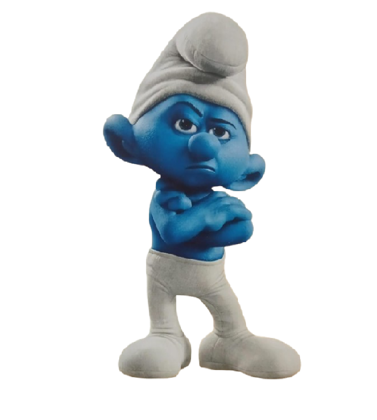

O FILME SMURFS

O QUE É A VERDADEIRA HISTÓRIA DOS SMURFS?
Diferentemente de muitos personagens que conhecemos e que são de origem americana, os Smurfs são europeus.
Peyo era belga e criava quadrinhos para públicos de países diferentes – França e Holanda.
O nome “Schtroumpfs” foi criado para os franceses e teve sua adaptação para os holandeses
QUAI SÃO AS CARACTERÍSTICAS DOS SMURFS?
Os Smurfs são uma espécie humanoíde de pequeninos gnomos azuis (Com cerca de três maçães de altura).
Atualmente eles residem na Vila Smurf, na série animada eles tiveram sua primeira aparição em "O Astro Smurf"

POR QUE OS SMURFS SÃO AZUL?
O criador destes personagens pensou em fazer os Smurfs verdes, mas a cor poderia se confundir com a das plantas
afinal, eles moram na floresta! O vermelho ficaria estranho.
Aí, ele escolheu o azul. Nos anos 1980, os Smurfs viraram desenho animado na TV.

COMO OS SMUFS SE REPRODUZEM?
No Universo Butterflies, a reprodução dos Smurfs é feita inteiramente por meio de entregas de cegonhas.

O QUE OS SMURFS COME?
As smurfberries aparecem apenas no desenho animado;
nos quadrinhos originais,
os Smurfs comem apenas as folhas da salsaparrilha.

QUEM SÃO TODOS OS SMURFS?
Os Smurfs são personagens de ficção criados por Peyo, conhecido por serem pequenas criaturas azuis com chapéus brancos e roupas brancas.
A maioria dos Smurfs tem nomes que refletem sua personalidade ou ocupação,
como Papai Smurf, Smurfette, Vaidoso, Ranzinza, Robusto, Gênio, entre outros.
Existem muitos Smurfs, com mais de 100 personagens identificados nas histórias em quadrinhos e animações
PAPAI SMURF:
O líder e sábio da vila, com uma barba branca e um chapéu com uma estrela.
SMURFETTE:
A única Smurf fêmea da vila, criada por Gargamel e transformada por Papai Smurf.
VAIDOSO:
É um Smurf que se preocupa muito com a sua aparência e está sempre se admirando no espelho.
RANZINZA:
É um Smurf com um humor contagiante e que não gosta de nada.

ROBUSTO:
Um Smurf forte e musculoso, que é sempre visto fazendo trabalhos pesados.

GÊNIO:
Um Smurf que faz truques de magia e é muito inteligente.
QUAL É O NOME DO BRUXO DOS SMURFS?
Gargamel é o principal antagonista da série e dos quadrinhos dos Smurfs . Ele é um bruxo e inimigo jurado dos Smurfs.

O QUE GARGAMEL SIGNIFICA?
Em Português de Portugal, "Gargamel" é mais conhecido como o nome do antagonista da série dos Smurfs,
o bruxo que tenta capturar ou destruir os Smurfs.
O nome tem origens francesas e pode ter ligação com a palavra "gargamelle", que pode significar "garganta" ou "gargalo".
QUE BICHO É O SMURF?
Os Smurfs são uma espécie humanoíde de pequeninos gnomos azuis (Com cerca de três maçães de altura).
Atualmente eles residem na Vila Smurf, na série animada eles tiveram sua primeira aparição em "O Astro Smurf".

Todos as cem criaturas que vivem na Vila Smurf têm aproximadamente 100 anos de idade.
As exceções são Papai Smurf e Vovô Smurf.
O primeiro, tem 550 anos, enquanto o segundo não tem idade definida.
FIM!